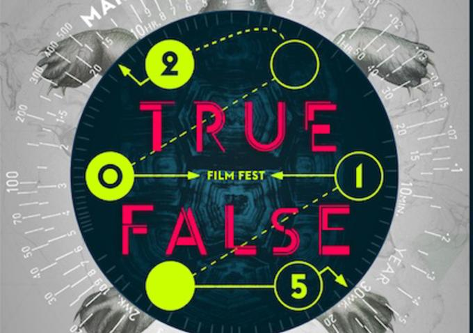
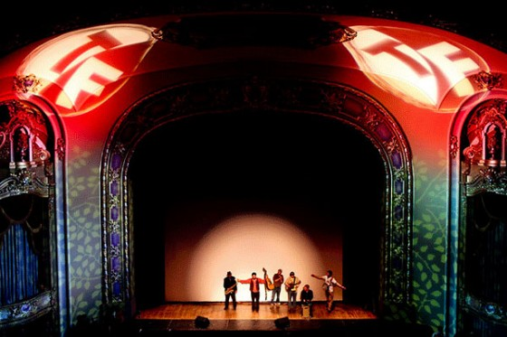

Menu
Film
Food
Music and Arts
Maps
Photos
True/False Film Fest 2015

Featured Stories
True/False Film Review: The Act of Killing (Directors Cut)
VoxMag 6 hours ago
True/False Film Review: Cartel Land
VoxMag 1 day ago
True/False Film Review: Of Men and War
VoxMag 2 days ago

The insider’s guide to True/False
True/False food trucks: Let the good food roll